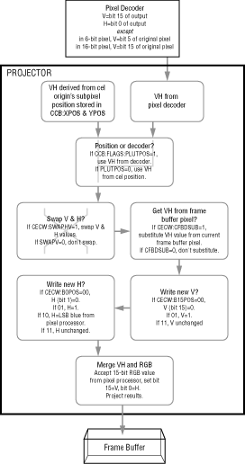

int32 SetCEControl( Item bitmapItem, int32 controlWord, int32 controlMask )
SetCEControl() accepts three arguments: the item number of the bitmap where the control word should be changed; a 32-bit cel engine control word to write to the bitmap item; and a 32-bit control mask that determines which bits of the control word are written into the bitmap item number.
When executed, SetCEControl() writes the supplied control word into the bitmap item's current cel engine control word. The control mask determines which bits of the control word it writes: 1 bit in the control mask specify that the corresponding control word bits are written; 0 bits in the control mask specifies that corresponding control word bits are not written. Use 0 bits in the mask for any bits in the bitmap's current cel engine control word you do not want changed when the new control word is written.
Table 6: Control word settings.
---------------------------------------------------------
Bits |Name |Parameter Controlled
---------------------------------------------------------
3130 |B15POS |Sets the bit 15 output of the
| |projector. 00=0; 01=1; 10=xxx; 11=use
| |bit 15 of the data decoder output.
---------------------------------------------------------
2928 |B0POS |Sets the bit 0 output of the
| |projector. 00=0l; 01=1; 10=as figured
| |by the pixel processor; 11=use bit 0
| |of the data decoder output.
---------------------------------------------------------
27 |SWAPHV |1=swap the V and H values (bits 15
| |and 0) before the pixel enters the
| |pixel processor; 0=do not swap the V
| |and H values.
---------------------------------------------------------
26 |ASCALL |1=allow super clipping; 0=disable
| |super clipping. The 0 setting has
| |priority over any CCB flags.
---------------------------------------------------------
25 |not used |
---------------------------------------------------------
24 |CFBDSUB |1=use the VH values coming from the
| |current frame buffer pixel; 0=use the
| |VH values coming from the data
| |decoder.
---------------------------------------------------------
2322 |CFBDLSB |Sets the value of the blue LSB coming
| |into the pixel processor from the
| |frame buffer. 00=0; 01=the blue LSB
| |(bit 0) of the current frame buffer
| |pixel; 10=the blue MSB (bit 4) of the
| |current frame buffer pixel; 11=the
| |green LSB (bit 5) of the current
| |frame buffer pixel.
---------------------------------------------------------
2120 |PDCLSB |Sets the value of the blue LSB coming
| |into the pixel processor from the
| |data decoder. 00=0; 01=the blue LSB
| |(bit 0) of the current frame buffer
| |pixel; 10=the blue MSB (bit 4) of the
| |current frame buffer pixel; 11=the
| |green LSB (bit 5) of the current
| |frame buffer pixel.
---------------------------------------------------------
190 |not used |Must be set to 0.
---------------------------------------------------------
B15POS value sets the bit 15 output of the projector to a constant (either 0 or 1), or it can use the bit 15 that comes out of the data decoder.
B0POS value sets the bit 0 output of the projector to a constant (either 0 or 1), to the bit 0 output of the data decoder, or the bit 0 output of the pixel processor.
SWAPHV flag enables V and H value swapping. When set to 1, it swaps bits 15 and 0 in a pixel before the pixel enters the pixel processor. This flag can be overridden by the preamble of an uncoded cel so that its pixels cannot have bits 15 and 0 swapped.
ASCALL flag enables or disables super clipping. Because the flag is ANDed with one of the CCB's super clipping flags, this flag must be set to 1 for any super clipping to occur. When ASCALL is set to 0, no super clipping can occur even if a CCB chooses to use it.
CFBDSUB flag determines where the VH value that is added to the pixel- processor output before the pixel is projected into the frame buffer comes from. When set to 1, the VH value comes from the current frame buffer pixel (which makes it possible to retain all VH values existing in the frame buffer such as those in lettering). When set to 0, the VH value comes from the data decoder.
CFBDLSB value determines what value gets plugged into the least-significant blue bit that is passed on to the pixel processor. The settings are 00, which sets the least-significant bit to 0; 01, which sets the least-significant bit to frame buffer bit 0 (the least-significant blue bit); 10, which sets the LSB to frame buffer bit 4 (the most-significant blue bit); and 11, which sets the least-significant bit to bit 5 of the frame buffer (the least-significant green bit).
The PDCLSB Value
When the pixel processor is set to receive its primary or secondary color source from the data decoder, the least-significant blue bit may have been coopted for a VH value. If this has happened, it can be filled in with another value. The PDCLSB value determines what gets plugged into the least-significant blue bit that is passed on to the pixel processor. The settings are 00, which sets the least-significant bit to 0; 01, which sets the least-significant bit to data decoder bit 0 (the least-significant blue bit); 10, which sets the least-significant bit to decoder bit 4 (the most-significant blue bit); and 11, which sets the least-significant bit to bit 5 of the decoder (the least-significant green bit).
PDCLSB is effective only for pixels that are not controlled by a UNCLSB value, which appears in the second preamble word for unpacked cel source data. This means that PDCLSB works only for packed cel source data, which does not have a second preamble word. Unpacked data always uses the UNCLSB.
Figure 1 shows the path of VH values as described in Understanding the Cel Engine and SPORT. The figure shows the context of each setting hierarchically. For example, CECW:B15POS is the B15POS value in the cel engine control word.

Figure 1: VH settings.
SetCEControl()call sets a new cel engine control word for the bitmap. All DrawCels() or DrawScreenCels() calls in a bitmap use the current value set by the most recent SetCEControl() for that bitmap.